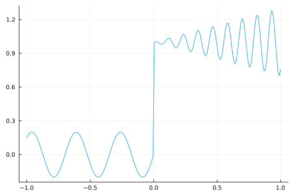
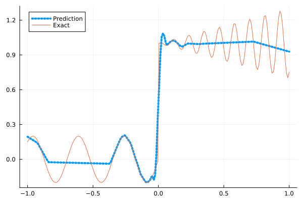
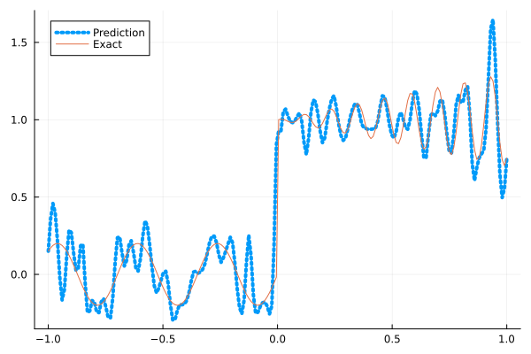
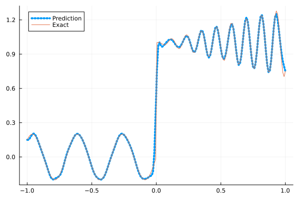
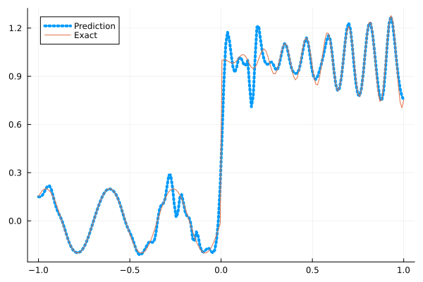
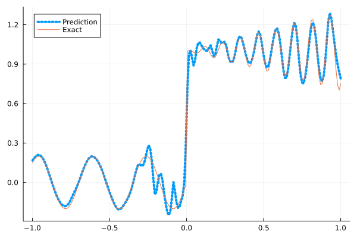

Fitting a nonlinear discontinuous function
This example is taken from here. However, we do not use adaptive activation functions. Instead, we show that using suitable non-parametric activation functions immediately performs better.
Consider the following discontinuous function with discontinuity at $x=0$:
\[u(x)= \begin{cases}0.2 \sin (18 x) & \text { if } x \leq 0 \\ 1+0.3 x \cos (54 x) & \text { otherwise }\end{cases}\]
The domain is $[-1,1]$. The number of training points used is 50.
Import pacakges
using Lux, Sophon
using NNlib, Optimisers, Plots, Random, StatsBase, ZygoteDataset
function u(x)
if x <= 0
return 0.2 * sin(18 * x)
else
return 1 + 0.3 * x * cos(54 * x)
end
end
function generate_data(n=50)
x = reshape(collect(range(-1.0f0, 1.0f0, n)), (1, n))
y = u.(x)
return (x, y)
endgenerate_data (generic function with 2 methods)Let's visualize the data.
x_train, y_train = generate_data(50)
x_test, y_test = generate_data(200)
Plots.plot(vec(x_test), vec(y_test),label=false)
Naive Neural Nets
First we demonstrate show naive fully connected neural nets could be really bad at fitting this function.
model = FullyConnected((1,50,50,50,50,1), relu)Chain(
layer_1 = Dense(1 => 50, relu), # 100 parameters
layer_2 = Dense(50 => 50, relu), # 2_550 parameters
layer_3 = Dense(50 => 50, relu), # 2_550 parameters
layer_4 = Dense(50 => 50, relu), # 2_550 parameters
layer_5 = Dense(50 => 1), # 51 parameters
) # Total: 7_801 parameters,
# plus 0 states.Train the model
function train(model, x, y)
ps, st = Lux.setup(Random.default_rng(), model)
opt = Adam()
st_opt = Optimisers.setup(opt,ps)
function loss(model, ps, st, x, y)
y_pred, _ = model(x, ps, st)
mes = mean(abs2, y_pred .- y)
return mes
end
for i in 1:2000
gs = gradient(p->loss(model,p,st,x,y), ps)[1]
st_opt, ps = Optimisers.update(st_opt, ps, gs)
if i % 100 == 1 || i == 2000
println("Epoch $i || ", loss(model,ps,st,x,y))
end
end
return ps, st
endtrain (generic function with 1 method)Plot the result
@time ps, st = train(model, x_train, y_train)
y_pred = model(x_test,ps,st)[1]
Plots.plot(vec(x_test), vec(y_pred),label="Prediction",line = (:dot, 4))
Plots.plot!(vec(x_test), vec(y_test),label="Exact",legend=:topleft)Epoch 1 || 0.2974598869170346
Epoch 101 || 0.016931056480930972
Epoch 201 || 0.015807040711350705
Epoch 301 || 0.015550161575931302
Epoch 401 || 0.01522127296516546
Epoch 501 || 0.014690871367236916
Epoch 601 || 0.013895497511482526
Epoch 701 || 0.01313064637409709
Epoch 801 || 0.012669765564164943
Epoch 901 || 0.012385383950256856
Epoch 1001 || 0.012306756388826407
Epoch 1101 || 0.01225340690260526
Epoch 1201 || 0.012286295943513168
Epoch 1301 || 0.012183066997719134
Epoch 1401 || 0.012171713688765151
Epoch 1501 || 0.012145226644982859
Epoch 1601 || 0.012150705851225707
Epoch 1701 || 0.012126541473893622
Epoch 1801 || 0.012172201338764505
Epoch 1901 || 0.012196695231937747
Epoch 2000 || 0.012155636921678951
10.721869 seconds (11.64 M allocations: 1.366 GiB, 6.10% gc time, 92.12% compilation time)
Siren
We use four hidden layers with 50 neurons in each.
model = Siren(1,50,50,50,50,1; omega = 30f0)Chain(
layer_1 = Dense(1 => 50, sin), # 100 parameters
layer_2 = Dense(50 => 50, sin), # 2_550 parameters
layer_3 = Dense(50 => 50, sin), # 2_550 parameters
layer_4 = Dense(50 => 50, sin), # 2_550 parameters
layer_5 = Dense(50 => 1), # 51 parameters
) # Total: 7_801 parameters,
# plus 0 states.@time ps, st = train(model, x_train, y_train)
y_pred = model(x_test,ps,st)[1]
Plots.plot(vec(x_test), vec(y_pred),label="Prediction",line = (:dot, 4))
Plots.plot!(vec(x_test), vec(y_test),label="Exact",legend=:topleft)Epoch 1 || 1.3027394431878683
Epoch 101 || 0.0010292347032092616
Epoch 201 || 2.2068007114726457e-5
Epoch 301 || 1.9934212406129404e-6
Epoch 401 || 1.351545365384207e-7
Epoch 501 || 5.334749821303339e-9
Epoch 601 || 1.2513102412384422e-10
Epoch 701 || 3.334879529152821e-12
Epoch 801 || 2.9690802216821797e-13
Epoch 901 || 1.234907673824405e-13
Epoch 1001 || 8.672964676139577e-14
Epoch 1101 || 7.056421427493256e-14
Epoch 1201 || 5.6455232397783806e-14
Epoch 1301 || 5.936917071503757e-14
Epoch 1401 || 4.120838585131564e-14
Epoch 1501 || 6.513508814918288e-14
Epoch 1601 || 1.0051693504288459e-13
Epoch 1701 || 5.267636248324199e-14
Epoch 1801 || 6.422252927524132e-14
Epoch 1901 || 7.924148372153831e-14
Epoch 2000 || 1.138992171825285e-13
5.524527 seconds (7.76 M allocations: 1.258 GiB, 8.09% gc time, 83.15% compilation time)
As we can see the model overfits the data, and the high frequencies cannot be optimized away. We need to tunning the hyperparameter omega
model = Siren(1,50,50,50,50,1; omega = 10f0)Chain(
layer_1 = Dense(1 => 50, sin), # 100 parameters
layer_2 = Dense(50 => 50, sin), # 2_550 parameters
layer_3 = Dense(50 => 50, sin), # 2_550 parameters
layer_4 = Dense(50 => 50, sin), # 2_550 parameters
layer_5 = Dense(50 => 1), # 51 parameters
) # Total: 7_801 parameters,
# plus 0 states.@time ps, st = train(model, x_train, y_train)
y_pred = model(x_test,ps,st)[1]
Plots.plot(vec(x_test), vec(y_pred),label="Prediction",line = (:dot, 4))
Plots.plot!(vec(x_test), vec(y_test),label="Exact",legend=:topleft)Epoch 1 || 0.39086215379710176
Epoch 101 || 0.00798486858570263
Epoch 201 || 0.006212333494005202
Epoch 301 || 0.004832467416429826
Epoch 401 || 0.003715091572874305
Epoch 501 || 0.002790181866787296
Epoch 601 || 0.0018919943825561412
Epoch 701 || 0.0011262017182869868
Epoch 801 || 0.0007027720951413449
Epoch 901 || 0.0004251241005172352
Epoch 1001 || 0.00022852027318707484
Epoch 1101 || 0.00011618271596375496
Epoch 1201 || 6.328892021474694e-5
Epoch 1301 || 4.408780405789932e-5
Epoch 1401 || 3.09266770856904e-5
Epoch 1501 || 0.0001725244541615658
Epoch 1601 || 2.1787029750883692e-5
Epoch 1701 || 1.911379495208091e-5
Epoch 1801 || 2.0914395830853734e-5
Epoch 1901 || 1.5433917619275737e-5
Epoch 2000 || 1.4033180983234981e-5
0.845237 seconds (1.15 M allocations: 892.456 MiB, 7.88% gc time)
Gaussian activation function
We can also try using a fully connected net with the gaussian activation function.
model = FullyConnected((1,50,50,50,50,1), gaussian)Chain(
layer_1 = Dense(1 => 50, gaussian), # 100 parameters
layer_2 = Dense(50 => 50, gaussian), # 2_550 parameters
layer_3 = Dense(50 => 50, gaussian), # 2_550 parameters
layer_4 = Dense(50 => 50, gaussian), # 2_550 parameters
layer_5 = Dense(50 => 1), # 51 parameters
) # Total: 7_801 parameters,
# plus 0 states.@time ps, st = train(model, x_train, y_train)
y_pred = model(x_test,ps,st)[1]
Plots.plot(vec(x_test), vec(y_pred),label="Prediction",line = (:dot, 4))
Plots.plot!(vec(x_test), vec(y_test),label="Exact",legend=:topleft)Epoch 1 || 0.5239234061019823
Epoch 101 || 0.005927053940416747
Epoch 201 || 0.005014382394308177
Epoch 301 || 0.004245647959342981
Epoch 401 || 0.0035442457218806235
Epoch 501 || 0.0019088224932445263
Epoch 601 || 0.000545394490506185
Epoch 701 || 6.395090821974378e-5
Epoch 801 || 2.60149375888438e-6
Epoch 901 || 3.991168582135102e-7
Epoch 1001 || 1.3024066140243055e-6
Epoch 1101 || 8.264244690707206e-8
Epoch 1201 || 1.2216968426496077e-8
Epoch 1301 || 3.733825431551146e-9
Epoch 1401 || 3.42138041216203e-5
Epoch 1501 || 3.4155714858185894e-9
Epoch 1601 || 3.478619688101505e-10
Epoch 1701 || 1.0377739446553398e-7
Epoch 1801 || 6.999022100633291e-10
Epoch 1901 || 1.675825451608809e-10
Epoch 2000 || 2.747992895572299e-7
5.185536 seconds (6.84 M allocations: 1.208 GiB, 7.12% gc time, 80.43% compilation time)
Quadratic activation function
quadratic is much cheaper to compute compared to the Gaussain activation function.
model = FullyConnected((1,50,50,50,50,1), quadratic)Chain(
layer_1 = Dense(1 => 50, quadratic), # 100 parameters
layer_2 = Dense(50 => 50, quadratic), # 2_550 parameters
layer_3 = Dense(50 => 50, quadratic), # 2_550 parameters
layer_4 = Dense(50 => 50, quadratic), # 2_550 parameters
layer_5 = Dense(50 => 1), # 51 parameters
) # Total: 7_801 parameters,
# plus 0 states.@time ps, st = train(model, x_train, y_train)
y_pred = model(x_test,ps,st)[1]
Plots.plot(vec(x_test), vec(y_pred),label="Prediction",line = (:dot, 4))
Plots.plot!(vec(x_test), vec(y_test),label="Exact",legend=:topleft)Epoch 1 || 0.419249854009055
Epoch 101 || 0.006707534874953637
Epoch 201 || 0.006070825069288541
Epoch 301 || 0.005274673921855235
Epoch 401 || 0.004532010083631454
Epoch 501 || 0.003870244183769558
Epoch 601 || 0.0030176488521551316
Epoch 701 || 0.0019764327934202425
Epoch 801 || 0.000934608046298718
Epoch 901 || 0.0002677039626506337
Epoch 1001 || 3.574081576655523e-5
Epoch 1101 || 5.161186988538145e-6
Epoch 1201 || 6.869320857497046e-7
Epoch 1301 || 2.883605801443413e-7
Epoch 1401 || 1.568730441433651e-5
Epoch 1501 || 1.42946321842123e-7
Epoch 1601 || 8.350481774858722e-7
Epoch 1701 || 6.58493439302661e-8
Epoch 1801 || 2.249712081992427e-6
Epoch 1901 || 6.032731753429273e-8
Epoch 2000 || 0.0002957207010480016
4.533739 seconds (6.55 M allocations: 1.190 GiB, 7.07% gc time, 84.66% compilation time)
Conclusion
"Neural networks suppresse high frequency components" is a misinterpretation of the spectral bias. The accurate way of putting it is that the lower frequencies in the error are optimized first in the optimization process. This can be seen in Siren's example of overfitting data, where you do not have implicit regularization. The high frequency in the network will never go away because it has fitted the data perfectly.
Mainstream attributes the phenomenon that neural networks "suppress" high frequencies to gradient descent. This is not the whole picture. Initialization also plays an important role. Siren mitigats this problem by initializing larger weights in the first layer, while activation functions such as gassian have large enough gradients and sufficiently large support of the second derivative with proper hyperparameters. Please refer to [1], [2] and [3] if you want to dive deeper into this.